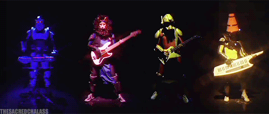
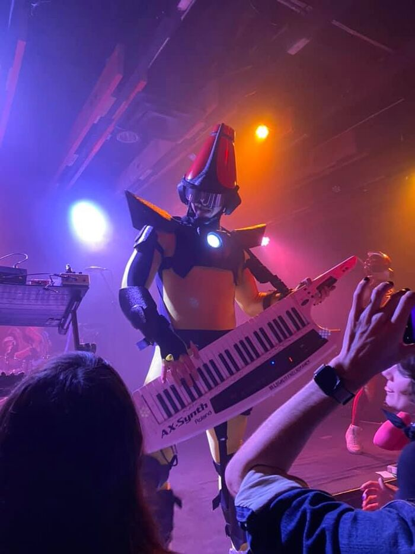
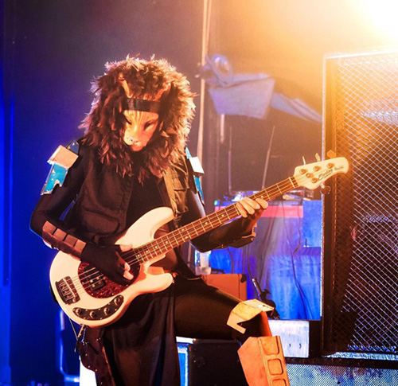
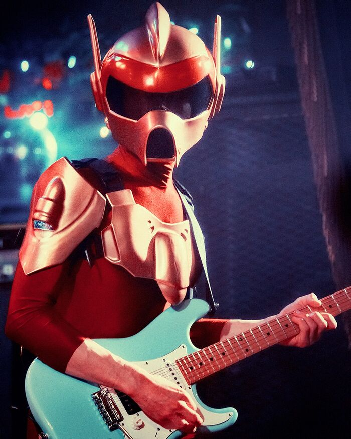
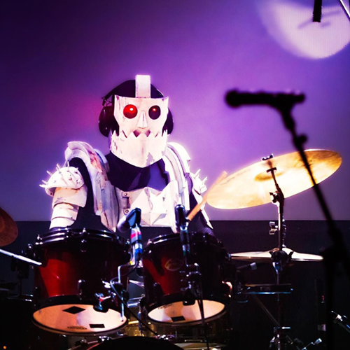

THE BOIS

WHO ARE THEY?

DOCTOR SUNG
- Keyboards, Keytar, Voicebox, Percussion
- Known for his yellow spandex, iconic orange, pylon-shaped helmet, and high kicking abilities
- Parents died of sadness fueling his wish to cure the world of sadness and misery
- Seeks to remove sadness, fear, and hatred from the universe through the power of groove
- Is now living on Earth to cure this planet of sadness and pain
- Enjoys streaming video games on his Twitch show called The Cone Zone

COMMANDER MEOUCH
- Bass and Backing Vocals
- Joined 2012
- Sassiest member of TWRP
- Meouch began playing bass when he was 8 months old (cat years)
- Prior to TWRP, Meouch was a space pirate who made a fortune smuggling funk to star systems
- Maintains a deep relationship with his instrument

LORD PHOBOS
- Lead Guitar and Acoustic Guitar
- Legends say he was born with a guitar in his hand
- Prior to TWRP, Phobos is a philosophical rocketeer from a race of advanced people in the future
- His civilization was destroyed by Commander Meouch smuggling funk to his people
- For unknown reasons, Phobos took the vow of silence making him one of the silent members of TWRP

HAVVE HOGAN
- Drums and Electric Percussion
- Joined 2006
- Was first discovered, unconscious, by Doctor Sung in the Mesozoic Period
- Doctor Sung resuscitated Havve by replacing his heart with a 808 drum
- In a 2012 interview it was stated that he spawned into Phil Collins' toilet
- The band has named him "least responsible" for"killing a lot of people for no reason"
Check out their albums!
Back to Homepage